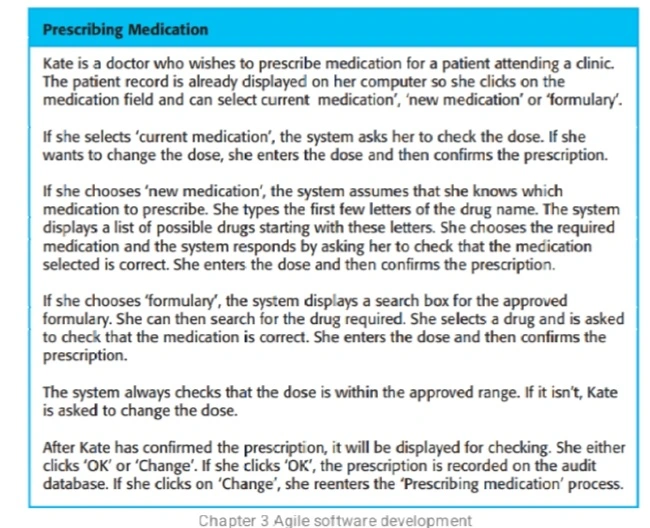
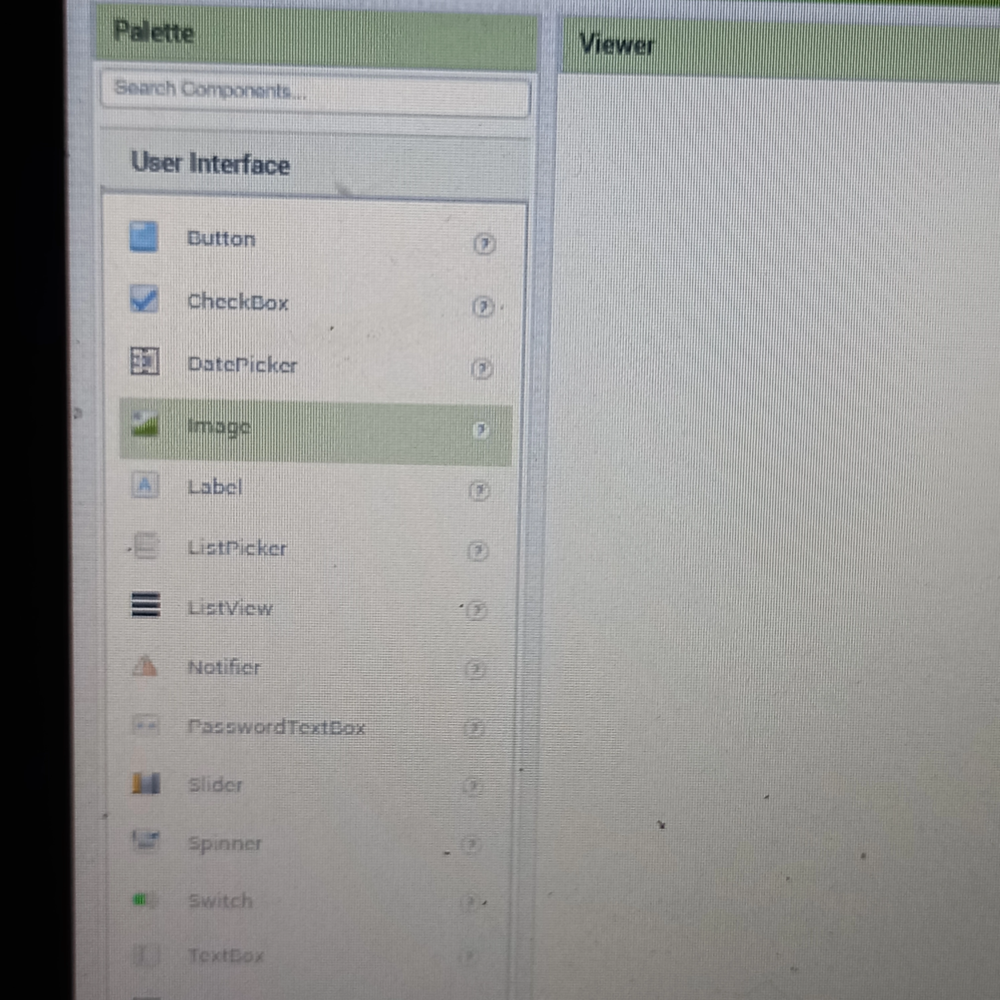
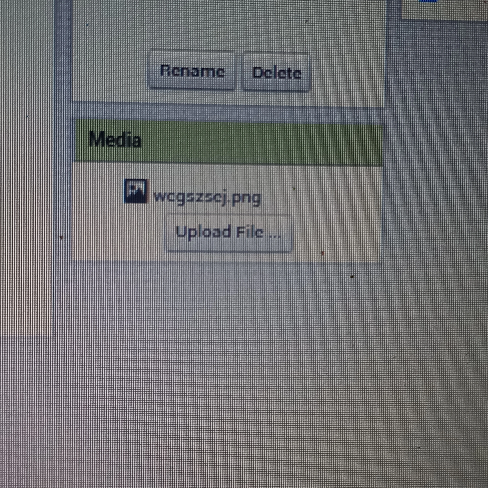

How to access and download past papers
Preparing for an exam can be an overwhelming task, but one thing that can help you immensely is practicing with past papers. By doing so, you will get familiar with the exam format, types of questions asked, and improve your time management skills.
In this blog, we will take you through the steps on how to download past exam papers from the Pioneer international university website.
Step 1: Go to piu.ac.ke
Step 2: Scroll down to University Library
On the homepage, scroll down until you see the "University Library" section.
Step 3: Click on the "University Library" and it will redirect you to the library's homepage.
Step 4: Then scroll down and tap Past Papers:read more
How to stop apps from auto starting on your laptop
If you've ever experienced a slow startup or a laggy laptop, chances are that you have several apps running in the background, some of which are set to automatically start when you turn on your computer. While it can be useful to have some apps start automatically, such as antivirus software, many others can slow down your system, waste precious resources, and drain your laptop's battery life. In this article, we'll discuss how to stop apps from auto-starting on a laptop.
Method 1: Using Task Manager (Windows)
Step 1: Open Task Manager
To open the Task Manager, right-click on the taskbar at the bottom of your screen and select "Task Manager" from the menu.
Step 2: Go to the "Startup" tab
In the Task Manager, select the "Startup" tab.
Method 2:read more
How to Solve the Issue of M-Pesa Not Letting You Finish Your Transaction
M-Pesa is a popular mobile money transfer service in many countries, including Kenya, Tanzania.It's a convenient way to send and receive money, pay bills, and purchase goods and services. However, some users may encounter an issue where M-Pesa does not let them finish their transaction. This can be frustrating, especially when you need to complete the transaction urgently. Fortunately, there is a simple solution to this problem.
The issue of M-Pesa not letting you finish your transaction usually occurs when your are about to press okay to finish the transaction and the keyboard does not disappear for you to finish the transaction. This is usually the final step.This is because the "okay" button is required to complete the transaction, and if it's not visible, you cannot proceed. To solve this problem, you need to switch to a floating keyboard, which will reveal the "okay" button.
To switch to a floating keyboard, follow these steps:
Step 1: Open the M-Pesa app on your phone and start the transaction process.
Step 2: When you reach the point where you need to enter your PIN or confirm the transaction, press okay the keyboard will not disappear to fix this look at your keyboard.
Step 3: Look for the three dots (ellipsis) icon located on the keyboard. The position of the icon may vary depending on the type of keyboard you are using.read more
A Step-by-Step Guide to Publishing Your Website to the Internet
Publishing a website on the internet can be an exciting and rewarding experience. Not only can you share your content with the world, but you can also showcase your technical skills by creating and publishing your website from scratch. In this article, we will go through the steps of how to publish a website on the internet, starting from coding in VS Code to using Github Pages.Step 1: Choose Your Tools
The first step to creating a website is to choose the right tools for the job. While there are many web development tools available, we recommend using Visual Studio Code (VS Code) as your code editor. VS Code is a free, open-source code editor that is widely used by web developers. It comes with many useful features, including syntax highlighting, code completion, and debugging tools. For android you can use treb edit
Step 2: Write Your Code
Once you have chosen your code editor, it's time to start writing your code. You can use HTML, CSS, and JavaScript to create your website. HTML is used for the structure of the website, CSS is used for styling, and JavaScript is used for interactivity.
Step 3: Test Your Website Locally
Before publishing your website, it's important to test it locally to ensure that everything is working correctly. You can do this by opening your HTML file in a web browser. This will give you a preview of how your website will look and behave when it's published.
Step 4: Create a Github Account.read more
To send work to a teacher using Lucidchart, follow these steps:
Create the work you want to send to your teacher in Lucidchart. This could be a UML diagram, a flowchart, a mind map, or any other type of visual aid that you want to share with your teacher.Once you have created your work, click on the "Share" button in the top-right corner of the screen.
In the sharing options, select "Invite People."
Enter your teacher's email address in the "Invite people" field. You can also add a message to your teacher if you wish.read more
do not fall for these instagram scams
Online scams have become increasingly common in recent years, and social media platforms such as Instagram have become a popular target for scammers. Instagram, with its massive user base and visual content, provides scammers with an ideal platform to reach potential victims.
1.crypto scams
Cryptocurrency has become increasingly popular over the years, with more people investing in digital assets. However, this rise in popularity has also led to an increase in crypto scams on Instagram. In this article, we will discuss the most common crypto scams on Instagram and how you can avoid them.
a.Fake Crypto Giveaways
Fake crypto giveaways are one of the most common scams on Instagram. In this scam, fraudsters create fake social media accounts that look like popular crypto influencers or companies. They then promote fake giveaways where users can win cryptocurrency by following their accounts, sharing their posts, or sending them a small amount of cryptocurrency as a "verification fee." However, once the victims send the cryptocurrency, they never receive the promised rewards.
b.Investment Scams
Investment scams are also common on Instagram, where fraudsters offer high returns on investment in crypto. They use social media to promote their investment schemes and attract investors. However, once the victims invest their money, the fraudsters disappear, and the victims lose their money. why would some ask you for money and triple it within minutes?if they had the means to triple money they wouldn't be in your dm asking for money. never give money without due diligence .read more
How to Use Small SEO Tools Designer for Creating Posters and Logos
Small SEO Tools is a website that offers a variety of free and paid tools to help website owners, bloggers, and digital marketers optimize their online presence. Some of the main offerings of Small SEO Tools include:• Plagiarism Checker: This tool checks for duplicate content across the web and helps users avoid copyright infringement issues.
• Keyword Position Checker: This tool lets users check the ranking of their website for specific keywords on different search engines.
• Backlink Checker: This tool helps users track their website's backlinks, which are links from other websites that point to their site.
• Grammar Checker: This tool checks the grammar and spelling of the content and provides suggestions for corrections.read more
Creating an app with mit app inventor( prescribing Medication
Creating an application for a hospital management system assignment can seem daunting, but with the right guidance, it can be a straightforward process. Here are some clear instructions on how to create such an application:
this was the question:
Step 1: On Screen 1, add an image.If you don't want to include an image, skip this step. To make the user go to Screen 2 when the image is clicked, go to the Blocks section on the top right side of the screen and click it.
Step 2: To add instructions, go to the Blocks section on the left side of your screen. Click Control, scroll down, and drag the block (Open Another Screen Screen Name Screen Name 1) to the center of the screen. Since you created an image, click on the image logo that appears on the left-hand side of the block screen (in your case, Image 1). When a pop-up appears, scroll to the top of the screen and drag and drop the block that reads (When Image1.click do). Merge it with (Open Another Screen Screen Name Screen2).
Step 3: On Screen 2, drag a text box from the user interface to the viewer (main screen). Go to the Properties section and on the text field, write "Patient Records." Then, untick the Enabled box and tick the Text Only box (this is to ensure the user does not manipulate the text). Next, add another button and name it "Medication Field." Adjust the width and height to your liking.read more
How to use Microsoft Office 365 to create an engaging PowerPoint Presentations
Microsoft 365 provides a range of tools to help you create a professional and engaging PowerPoint presentation. Here are the steps to follow:
Step 1: Open PowerPoint. You can do this by clicking on the PowerPoint icon in your Microsoft 365 app list.
Step 2: Choose a template. When you open PowerPoint, you will see a range of pre-designed templates to choose from. Select one that fits your presentation style and theme.
Step 3: Add slides. After selecting a template, you can add slides to your presentation. Click the New Slide button in the Home tab to add a new slide. You can choose from different slide layouts to suit your needs.
read more
How to view you mit app without having to download multiple times
If you're tired of constantly downloading changes every time you make updates to your app on the MIT App Inventor, there's a simpler way to make changes without having to redownload. Follow the steps below to learn how:
Step 1: Download the MIT AI2 Companion from the Google Play Store. This is an essential tool for controlling your app through your phone.
Step 2: Log in to your MIT App Inventor account and open the app project you want to work on. Once you're on the main screen, click on the "Connect" button located at the top of the page .
Step 3: In the drop-down menu that appears, select "AI Companion." This will generate a QR code on the screen.
Step 4: Open the MIT AI2 Companion app on your phone and click on the "Scan QR Code" button. mit ai2 will open up your camera point it to the qr code.read more
How to add an image to your screen on mit app inventor
Adding an Image to Your Screen on MIT App Inventor
To add an image to your screen on MIT App Inventor, follow these steps:
• Log in to yourMIT App Inventor account.
• Open your project. A screen is already added by default, which is called Screen1.
• On the left-hand side of the screen, under the User Interface section, you will find an icon labeled "Image." Click and hold the image icon and drag it into the screen. The image will be named Image1.

• Assuming you have already downloaded and named your file, go to the bottom right-hand side of your page. You will see a section named "Media." Under Media, there is an "Upload File" button. Click the button and choose the file you want to upload. Then click "OK."

• Under the Media section, you will see the name of your image. On the bottom right side of the screen, you will find a "Properties" section. Tick the "Clickable" button and adjust the width and height by clicking the "Fill Parent" button.read more
How to make a powepoint presentation
To make a PowerPoint presentation of a software engineering project, follow these steps:
1.open or install Microsoft 365.
2.click on the plus sign and click presentation.
3.create an attention-grabbing title slide that includes the name of the project and your team members.
4.Introduce the project with a brief overview of the problem it solves and why it is important.
5.Outline the project's objectives and goals, as well as the timeline for completing them.
6.Discuss the project's architecture and design, including any diagrams or models that you have created to ilustrate them.read more
How to make an executive summary
An executive summary is a brief and concise overview of a larger document or report. It is typically written for busy executives and decision-makers who may not have time to read the entire document but still need to understand the key points and recommendations. Here are some general guidelines on how to write an executive summary:
1.Start with a brief introduction that provides context for the document or report.
2.Identify the main problem or issue that the document or report addresses.
3.Summarize the key findings, conclusions, and recommendations.read more
How to come up with requirements in software engineering
As a software engineering student, coming up with requirements for your projects can be a challenging task. Here are some steps to help you get started:
1.Identify the problem or opportunity: Start by identifying the problem or opportunity that your project will address. This could be a need in a particular industry, a gap in existing software solutions, or an opportunity to improve a business process.
2.Define the scope: Define the scope of your project, including the features, functionality, and user requirements. This will help you to narrow down the focus of your project and ensure that you are meeting the needs of your target audience.
3.Conduct research: Conduct research to identify the best practices and technologies that can be used to address the problem or opportunity you have identified. This can involve conducting user surveys, market research, and competitive analysis.
4.Develop use cases: Develop use cases that describe how your software will be used in real-life situations. This will help you to identify the features and functionality that are needed to meet the needs of your target audience.read more
How to come up with documentation in software engineering
Documentation is an essential aspect of software engineering projects. It helps to ensure that the project is well-organized, maintainable, and scalable. Here are some tips for software engineering students on how to create documentation for their projects:
1.Start with a clear project scope and requirements document. This document should outline the goals, objectives, and deliverables of the project.
2.Use a version control system such as Git to track changes to your project code and documentation.
3.Create a README file that provides a high-level overview of your project. This file should include information such as how to install and run the project, dependencies, and any other relevant information.
4.Use code comments to explain how your code works and why certain design decisions were made.
5.Write detailed technical documentation that covers the architecture, design, and implementation of your project. This documentation should be aimed at other developers who may need to maintain or extend your code in the future.
6.Include diagrams, flowcharts, and other visual aids to help explain the system architecture and design.
read more
Areas of specialization in piu (bsit)
1.AI (Artificial Intelligence) involves the evolution of intelligent computer systems that perform objectives which require human intelligence. AI systems learn from data to improve their performance . AI is used in a wide range of applications, such as speech recognition, natural language processing, computer vision, robotics, and autonomous vehicles. AI systems can transform many industries and improve peoples lives in numerous ways.
2.Distributed Systems:
It refers to computer systems that are composed of multiple interconnected computers that work together to achieve a common goal. These systems are used to perform complex tasks such as processing large amounts of data or providing high-performance computing. Distributed systems are used in many applications, including social media platforms, cloud computing, and distributed databases.
3.Software Engineering:
This involves the design, development, testing, and maintenance of software. It includes a range of activities, including requirements analysis, software design, coding, testing, and deployment. Software engineering is used in many industries, including healthcare, finance, and entertainment.read more
How to pursue computer degree without a computer
It is possible to pursue an Information Technology (IT) degree without owning a computer. While coding is a part of the curriculum, it is not the only aspect of learning. This article provides insights on how you can learn coding without a computer.
Here are some tips:
One of the first languages you may learn is C programming. CodeBlocks is a popular application for installation on a computer. However, you can use an alternative mobile application called Cxxdroid, which is free and available on the Google Play Store.
If you want to learn C++, Cxxdroid has you covered as well.read more
How to fix connected without Internet on zuku wifi.
Are you having issues with your Zuku WiFi? Here are some steps to follow to log in to your router and troubleshoot any problems you may be experiencing.
first try to clear your routers cache. this is by pressing the reset button for 20 seconds located on the back of your router
if that does not work, go to your device's settings and navigate to the WiFi section. Locate your WiFi name and click on the gear logo next to its image. Then, click on the manage router.
A login page will appear. This is specifically for Zuku WiFi, which uses the Technicolor router. Leave the username blank and use admin as your password.
read more
How to pay for online products using mpesa.
Are you a Kenyan resident looking to pay for products like netflix and spotify using a credit card but don't have one? You can still enjoy the benefits of using credit cards by following these easy steps using Mpesa.
Firstly, download the Mpesa app on your smartphone mpesa app and tap on the "Grow" option at the bottom of the screen. Next, select "Global Pay" and sign up for the service. Once signed up, generate your credit card details and use them to pay for any products or services you need.read more
How to set up ads for your intagram account and reach more followers.
If you are looking to promote your products on Instagram but don't know how to get started, this article will guide you through the process step by step.
Firstly, open your Instagram app and log in to your account. Next, go to your profile and turn your account into a professional account by going to Settings, then Account, and clicking on "Add Professional Account."
Once you've converted your account to a professional account, click on one of your posts, and alongside insights, you'll find a "Boost Post" button. Click on this button and select a goal for your ad. Next, let your target audience be automatic and select your budget and duration.read more
How to download music easily
Downloading songs can be a simple process if you follow these steps:
Search for your song: Go to YouTube and search for the song you want to download.
Copy the link: Click on the share button below the video and copy the link to your clipboard.
Find a reliable converter: Use a search engine to find a YouTube video to audio/mp3 converter. Make sure to use a reliable website to avoid downloading any malware or viruses onto your device.
Choose a trustworthy website: Choose a website that has a good reputation and user reviews. Avoid websites that have a lot of ads or pop-ups, as these can be annoying and may contain harmful content.
read more
How to gain followers easily in kenya grow your account
If you're looking to increase your followers on Instagram, there are a few strategies you can implement. Here's a revised guide to help you get started:
Explore the platform: Start by exploring the Explore page on Instagram. Look for posts that are recent, probably less than a week old. Check if the users are from your local country or region.
Check the likes: Click on the likes of a post you're interested in. Follow those who have liked the post. Give high priority to those who have put stories on their pages under the "Who to Follow" section.
Be cautious: Avoid following users who don't have profile pictures or whose bio includes words like "forex" or "sell advice." Also, steer clear of accounts with many followers but low following.
read more